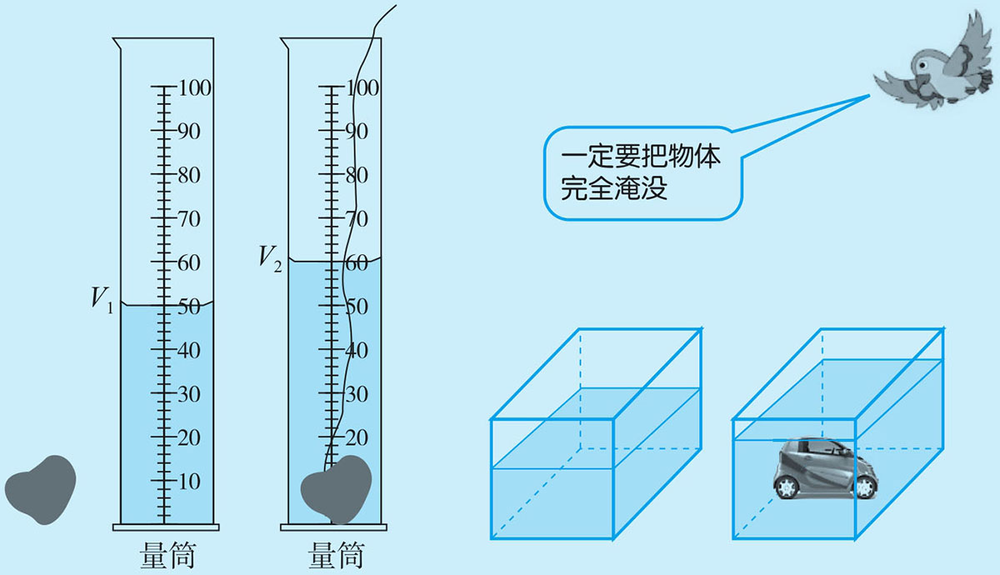
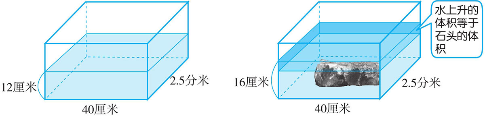
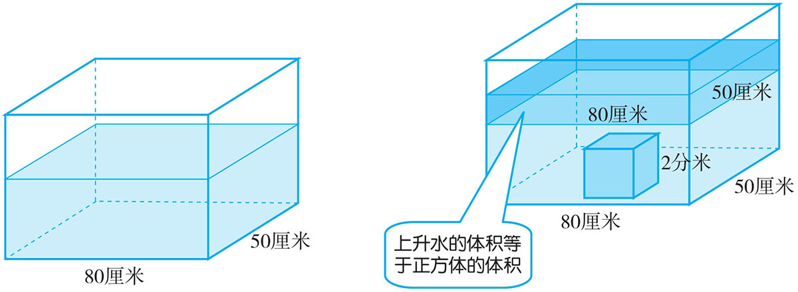
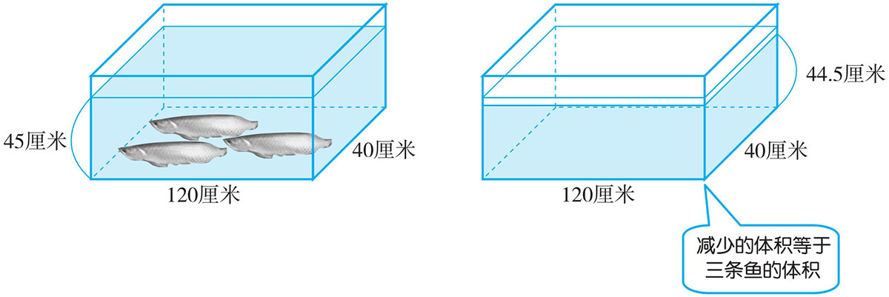
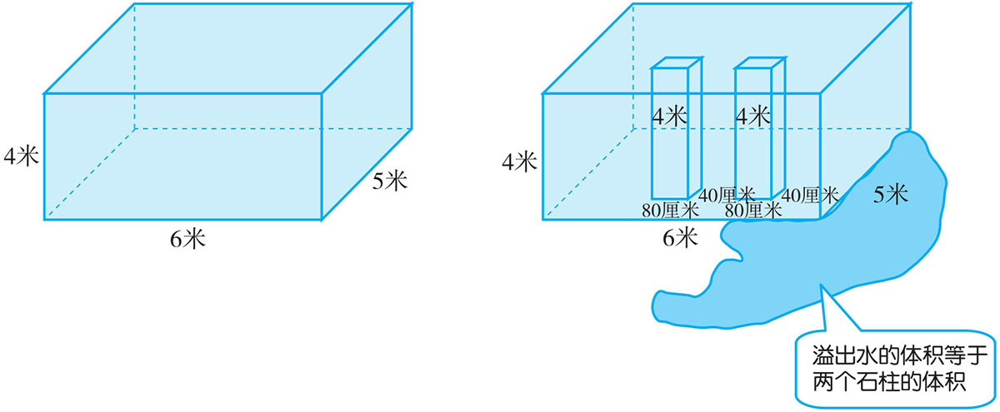
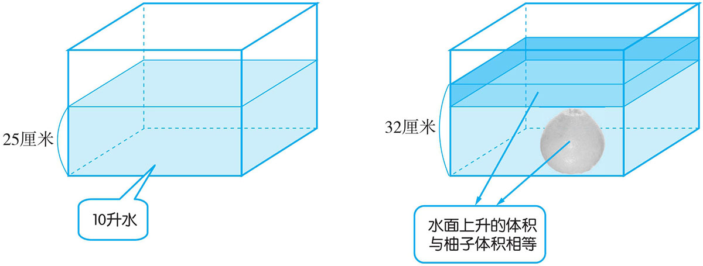

规则物体的体积用相应的公式来计算，如：长方体、正方体、圆柱与圆锥等。但不规则的物体就不能用公式来计算，如：土豆、梨、柚子、一个人、一头大象等。对于这些不规则的物体一般用“等积代换”的思想，一是用有刻度的量杯来测量，二是用规则的容器（如长方体容器、圆柱形水池）来测量。没入后的总体积（水未溢出）减去未没入前水的体积得到的就是不规则物体的体积。

例1 一个长方体玻璃缸，从里面量得长40厘米，宽2.5分米，缸内水深12厘米。把一块石头放进缸里，水面升到16厘米，求石头的体积。
玻璃缸内的水面为什么从12厘米上升到16厘米，是因为放了一块石头，说明上升的16-12=4（厘米）水的体积就是石头的体积。

40×(2.5×10)×(16-12)=40×25×4=4000（立方厘米）
答：石头的体积是4000立方厘米。
例2 在一个长80厘米，宽50厘米的长方体玻璃水缸中，放入一块棱长2分米的正方体铁块后，水面会上升多少厘米？
放入一块棱长为2分米的正方体，水面上升的体积与正方体的体积相等。而水面上升所形成的形状是一个规则的长方体，长为80厘米，宽为50厘米。用正方体的体积（也是水面上升所形成的长方体的体积）与长方体的底面积相除，就可求出水面上升的高度。

(2×10)3 ÷(80×50)=8000÷4000=2（厘米）
答：水面会上升2厘米。
例3 何坤家有一个长方体的鱼缸，从里面量长120厘米，宽40厘米，水面高45厘米。取出三条同样大的银龙鱼后水面下降到44.5厘米，一条银龙鱼的体积是多少立方厘米？
取出三条银龙鱼后，水减少的体积就是三条鱼的体积。

120×40×(45-44.5)÷3=2400÷3=800（立方厘米）
答：一条银龙鱼的体积为800立方厘米。
例4 在一个长6米、宽5米、高4米的水池中注满水，然后把两条长80厘米、宽40厘米、高4米的石柱立着放入池中，则水池溢出的水的体积是多少？
水池先注满水，任意放一个物体进去都会溢出水来，不管池子有多大，放一个体积小的物体，溢出的水就会少一些，反之，放一个体积大的，溢出的水就会多一些。也即是放进去的物体体积有多大，溢出水的体积就有多少。它与池子的大小无关，只要物体是全部淹没，要求溢出水的体积，就是求放进去与物体的体积。

(80÷100)×(40÷100)×4×2=0.8×0.4×4×2=2.56（立方米）
答：溢出水的体积为2.56立方米。
例5 一个长方体玻璃容器，向容器内倒入10升水，这时水深25厘米，再把一个柚子放入水中，完全浸没，这时量得水面高度是32厘米，这个柚子的体积是多少？
柚子没入水中，水面上升的体积就是柚子的体积。水面上升形成的是一个长方体，这个长方体的高是32-25=7（厘米），长与宽未知，并且也不能求出具体长与宽的长度。但可以通过先前的两个条件可求出长方体的底面积为10×1000÷25=400（平方厘米），它也是水面上升形成的长方体的底面积。因此，柚子的体积为400×7=2800（立方厘米）。

10×1000÷25×(32-25)=400×7=2800（立方厘米）
答：柚子的体积是2800立方厘米。
1．一个长方体盛水容器，从内部量得底面长20厘米，宽15厘米，放入一个土豆后，水面升高了2厘米，这个土豆的体积是多少？
2．把一个铁球从长2.5分米，宽2.2分米的长方体盛水容器里取出，水面由6分米下降到5.5分米，你能求出这个铁球的体积是多少吗？
3．一个鱼缸长100厘米，宽60厘米，水深42厘米，放入几条观赏鱼后，水深为44厘米，观赏鱼的体积是多少立方分米？
4．在一个底面积为48平方分米的长方体鱼缸里放入一个假山石，让它全部淹没，水面上升了3厘米。这个假山石的体积有多大？
5．将3块棱长为10厘米的正方体木块，放到一个长、宽分别是50厘米、40厘米的有水长方体玻璃缸中，让其全部淹没。水面上升了多少厘米？
6．一个长方体容器，从里面量长为4分米，宽为3分米，向容器里倒入24升水，再把一些土豆放入水中，这时水深26厘米，这些土豆的体积是多少？
7．在一个装满水的正方体水缸里，有一块被水浸没了的长方体铁块。已知正方体水缸从里面量的棱长为30分米，长方体铁块的长15分米，宽10分米。当把铁块取出后，水位下降了4分米，长方体铁块的高是多少？
8．一个长方体玻璃缸，从里面量长10分米，宽8分米，高7分米，水深6分米，如果投入棱长为5分米的正方体铁块，缸里的水溢出多少？
9．在一个玻璃缸中倒入400毫升的水，再放入一个长8厘米，宽6厘米的长方体铁块，这时铁块和水的总体积是640立方厘米，铁块的高是多少厘米？